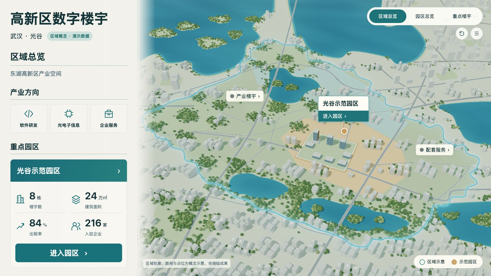
原图完整并排，保持比例；默认整屏1920×1080，演示数据；卡片为实际选择状态。原AI基准未改。实际交互与性能见cards-runtime-v21.json，源重建见rebuild-v21-delivery.json。
城市还原问题R-05继续开放：建筑、水面、路网和景观仍比原稿简化。卡片为用户后续要求的局部修订，不伪称原稿已包含这套卡片。园区进入动画待用户确认v22分镜，本版未实现。


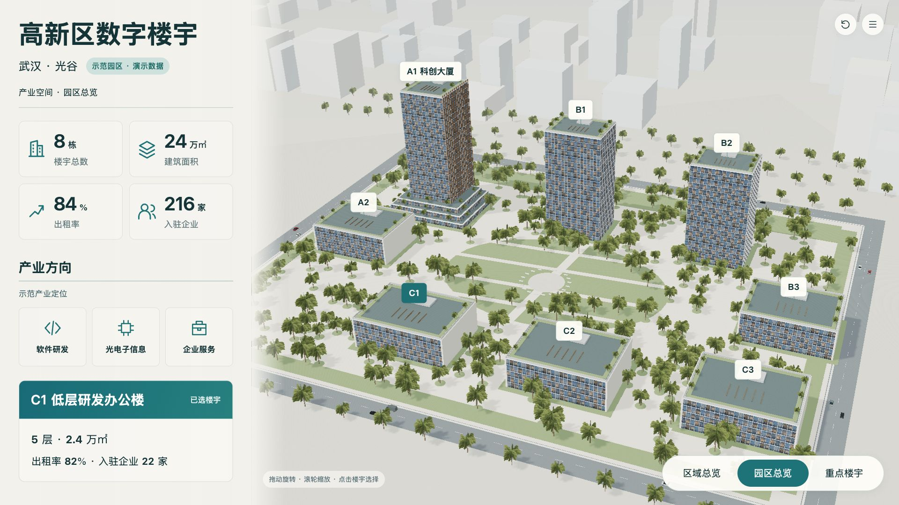

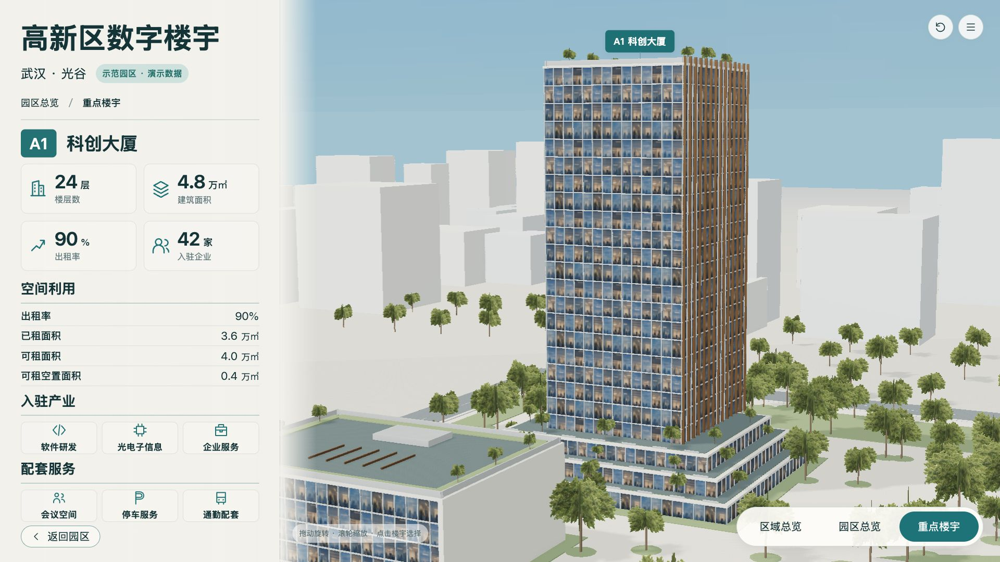
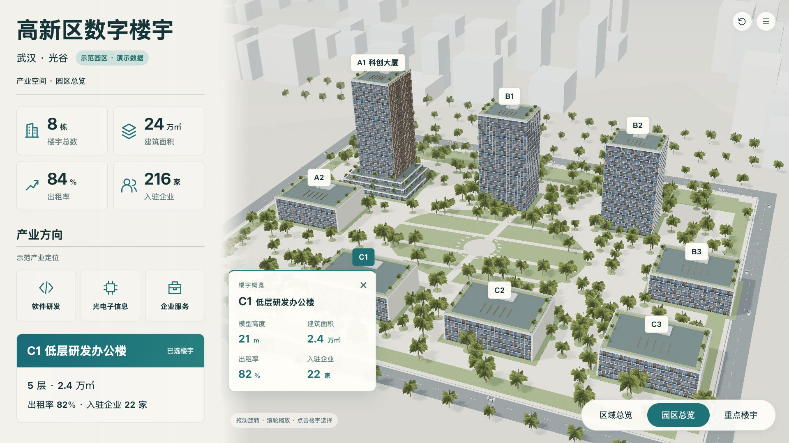
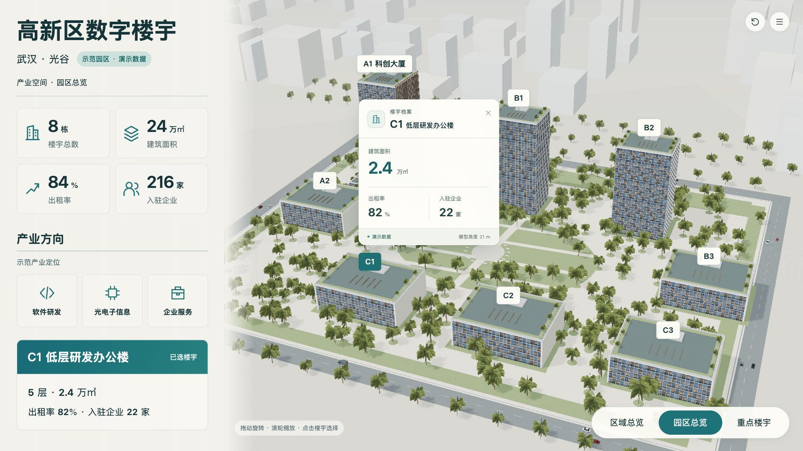
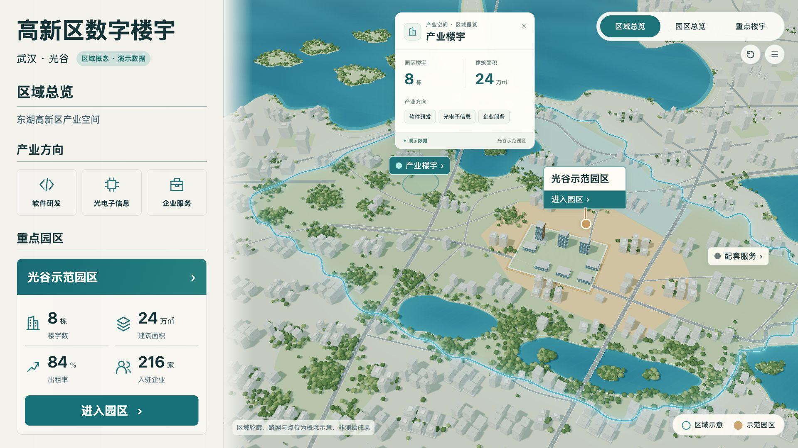
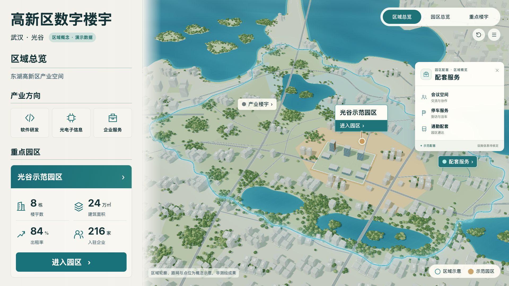
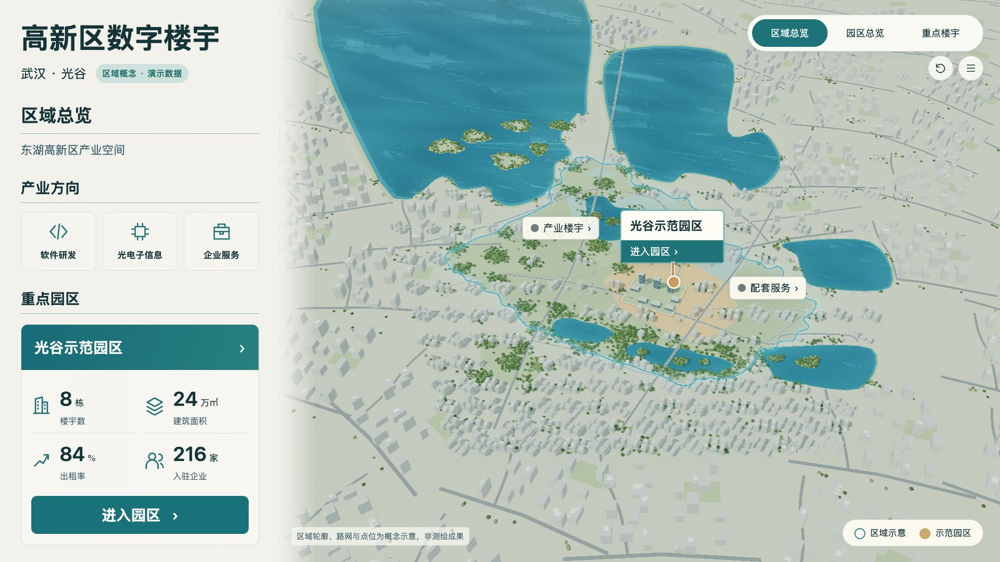
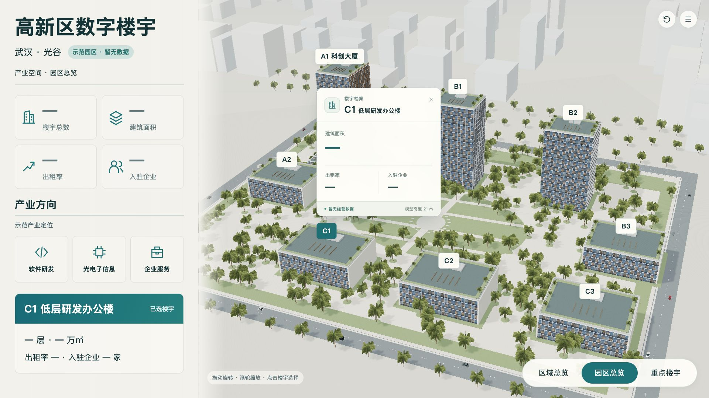
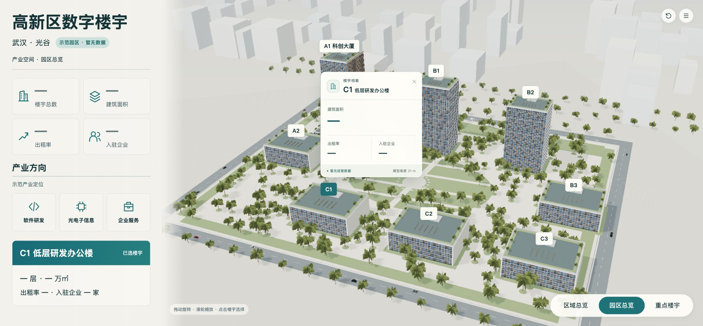
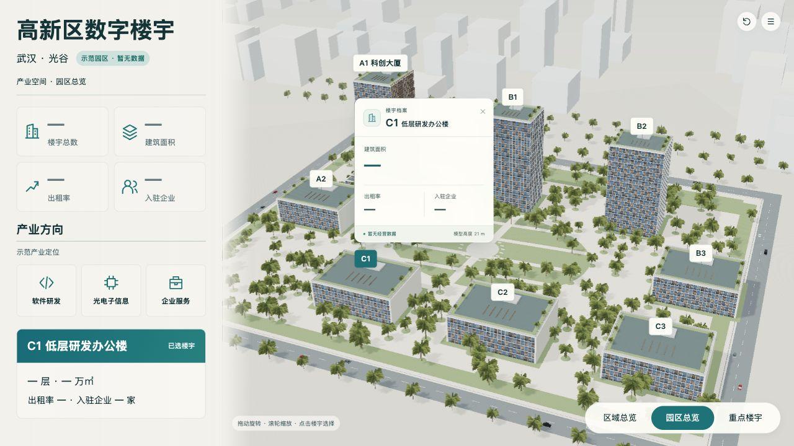